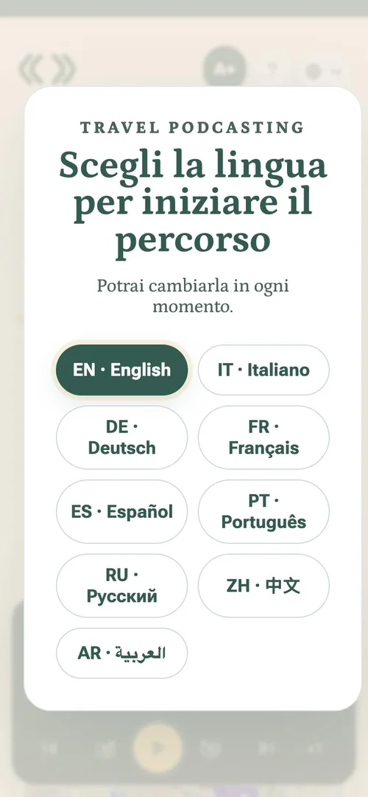
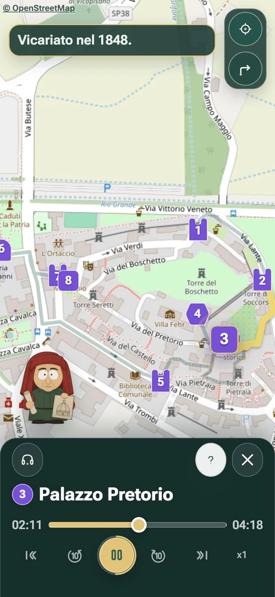
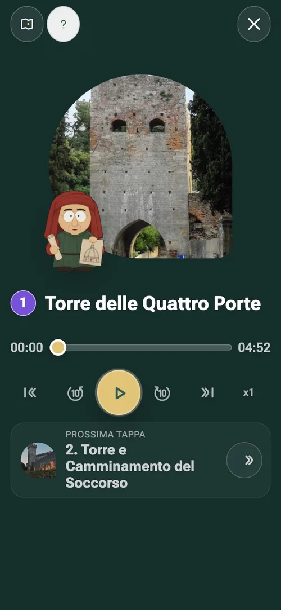
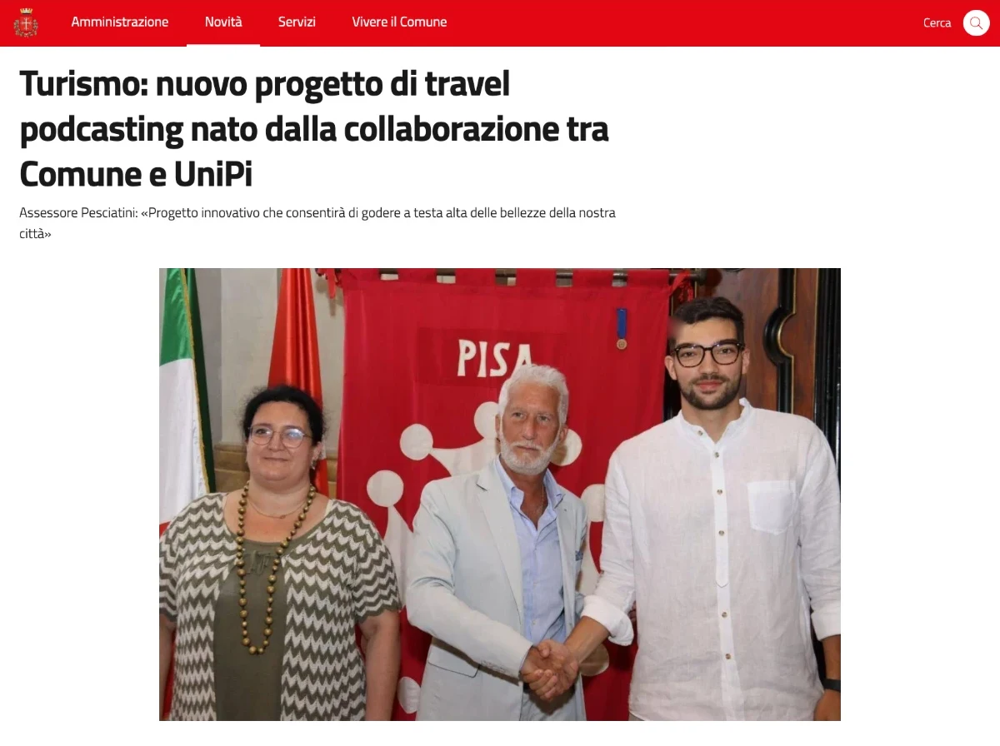

75%
dei turisti visita solo il 4% dell'Italia.
I borghi restano fuori dai percorsi più battuti. Serve un racconto che dia un motivo per fermarsi e per arrivare alla tappa successiva.
The European House – Ambrosetti (TEHA Group), su dati ISTAT 2022.
Storie digitali per i luoghi
Percorsi audio che raccontano un borgo mentre lo si attraversa. Si aprono dal web, senza installare nulla, con mappa, voce e testo che avanza. Pensati per i Comuni che vogliono far arrivare le proprie storie a più persone.
Come funziona
Il visitatore sceglie la lingua, tocca una tappa sulla mappa e ascolta il racconto mentre cammina. Tre schermate del percorso di Vicopisano.



Il problema
75%
dei turisti visita solo il 4% dell'Italia.
I borghi restano fuori dai percorsi più battuti. Serve un racconto che dia un motivo per fermarsi e per arrivare alla tappa successiva.
The European House – Ambrosetti (TEHA Group), su dati ISTAT 2022.
47%
degli europei parla inglese come lingua straniera.
Meno di una persona su due. Per anni abbiamo fatto cartelli in italiano e in inglese, ma un turista su due non capisce cosa c'è scritto.
Eurobarometro 2024, Commissione europea.
I due piloti
Non sono mockup: sono siti pubblicati, con le voci registrate e le tappe sulla mappa. Apriteli e provateli come li proverebbe un visitatore.
Otto tappe dentro il borgo fortificato, dalla Torre delle Quattro Porte al Palazzo Comunale. Disponibile in italiano, inglese, tedesco, francese, spagnolo, portoghese, russo, cinese e arabo.
Apri il percorso →
Sette tappe dalla Certosa Monumentale al Monte Serra, lungo la valle dei mulini. Una guida che accompagna il visitatore tra acqua, pietra e lavoro.
Apri il percorso →
Dall'esperienza al metodo
Il format nasce dall'esperienza avviata a Pisa con il Comune e l'Università nel 2022. Funzionava, ma ogni percorso richiedeva troppo lavoro per poterlo proporre a molti Comuni. Oggi l'intelligenza artificiale accorcia tutte le fasi: copy, adattamento linguistico, voce, materiali grafici e sviluppo. Riducendo il lavoro ripetitivo possiamo contenere i costi e personalizzare il progetto per ogni Comune.

Fonti e storie, insieme a chi conosce il luogo.
Copywriting e versioni linguistiche, da rivedere insieme.
Voce, audio e materiali visivi.
Un'esperienza web leggera, facile da aggiornare.
Chi lo costruisce
Competenze diverse, nessuna divisione rigida dei ruoli: storie, contenuti, tecnologie e prototipi li costruiamo insieme.
Ingegneria gestionale · Scienze della comunicazione
Ricercatore all'Università di Pisa. Lavora come freelance in copywriting e formazione sull'intelligenza artificiale.
Allievo Ordinario alla Scuola Superiore Sant'Anna
È stato a INNOVIT, a San Francisco. Ha ideato NExTerritorio, il progetto di CISL Pisa con JEVIS, ACLI e Aforisma in cui studenti e Comuni progettano insieme il futuro del territorio. Porta nel progetto una prospettiva di organizzazione e gestione.
Il prossimo passo
Completiamo i piloti di Vicopisano e Calci raccogliendo, insieme ai Comuni, cosa funziona e cosa portare alla tappa successiva. L'idea è aggiungere un punto di accesso leggero che valorizza il lavoro di chi già si occupa di turismo e cultura. Le scuole possono usare lo stesso patrimonio per esplorare il territorio e lavorare sulle fonti.
Lasciate un contatto: vi scriviamo noi, con il link alle demo e una scheda breve del progetto.